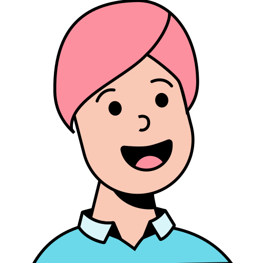
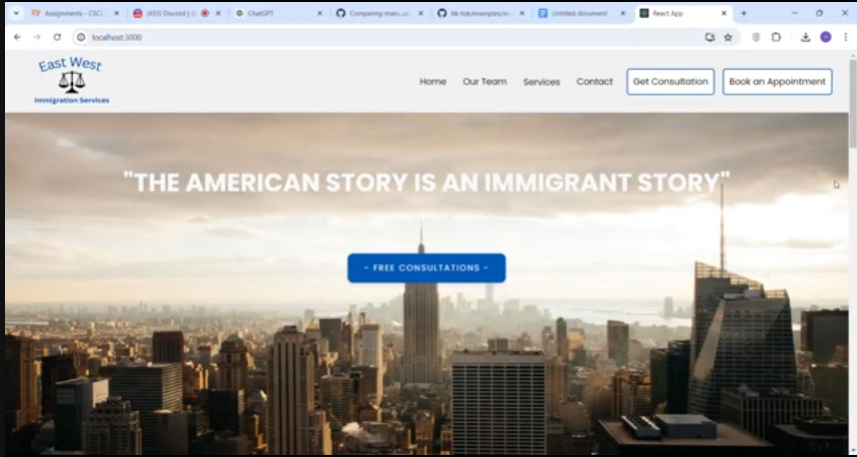
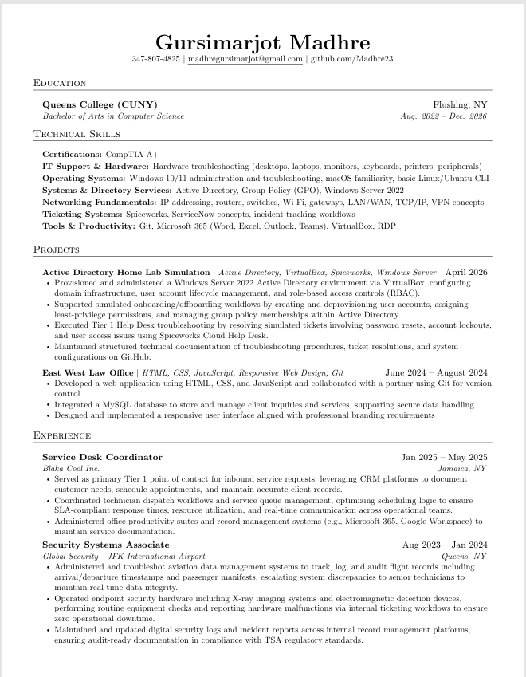

Hi, I'm
I am a Computer Science student at Queens College with a strong interest in IT support, systems administration, cloud infrastructure, and web development.
I am currently pursuing a Bachelor of Arts in Computer Science at Queens College. While studying computer science, I have shifted my focus toward the IT side of technology, especially IT support, help desk operations, systems administration, and cloud infrastructure. I enjoy applying my technical background to real-world troubleshooting, user support, and system management.
Outside of my technical work, I am motivated to work in a field that encourages lifelong learning and helps people through technical solutions. In my free time, I enjoy staying up to date with technology, going to the gym, shooting hoops, and playing video games.
Hardware troubleshooting, desktops, laptops, printers, peripherals, and user support.
Windows 10/11, Windows Server 2022, Active Directory, Group Policy, and RDP.
IP addressing, routers, switches, Wi-Fi, gateways, LAN/WAN, TCP/IP, and VPN concepts.
HTML, CSS, JavaScript, responsive web design, Git, and basic database experience.
Microsoft 365, VirtualBox, GitHub, Spiceworks, and ServiceNow concepts.
CompTIA A+ certified with a focus on support, hardware, operating systems, and troubleshooting.
Active Directory | VirtualBox | Spiceworks | Windows Server
Built a Windows Server 2022 Active Directory environment to practice user account management, role-based access controls, password resets, account lockouts, and help desk ticket troubleshooting.
View DocumentationHTML | CSS | JavaScript | Responsive Web Design | Git
Developed a responsive website using HTML, CSS, and JavaScript. The project focused on professional branding, clean layout, user-friendly design, and version control collaboration.

Technical Support | Audio/Video | Troubleshooting
Provided volunteer technical support for livestream operations by assisting with audio/video setup, equipment troubleshooting, and on-site support during live events in a community environment.
South Richmond Hill, NY
My resume highlights my education, technical skills, IT support background, Active Directory home lab, and web development projects.
